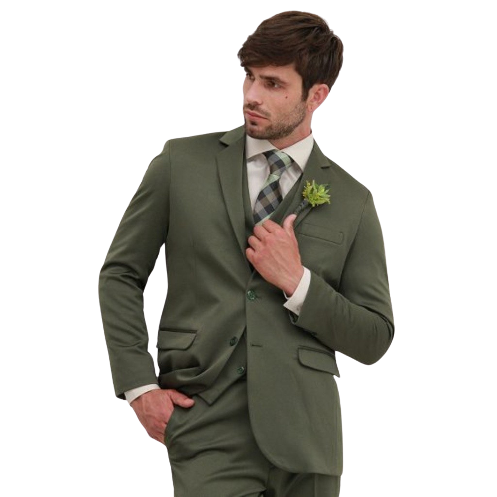
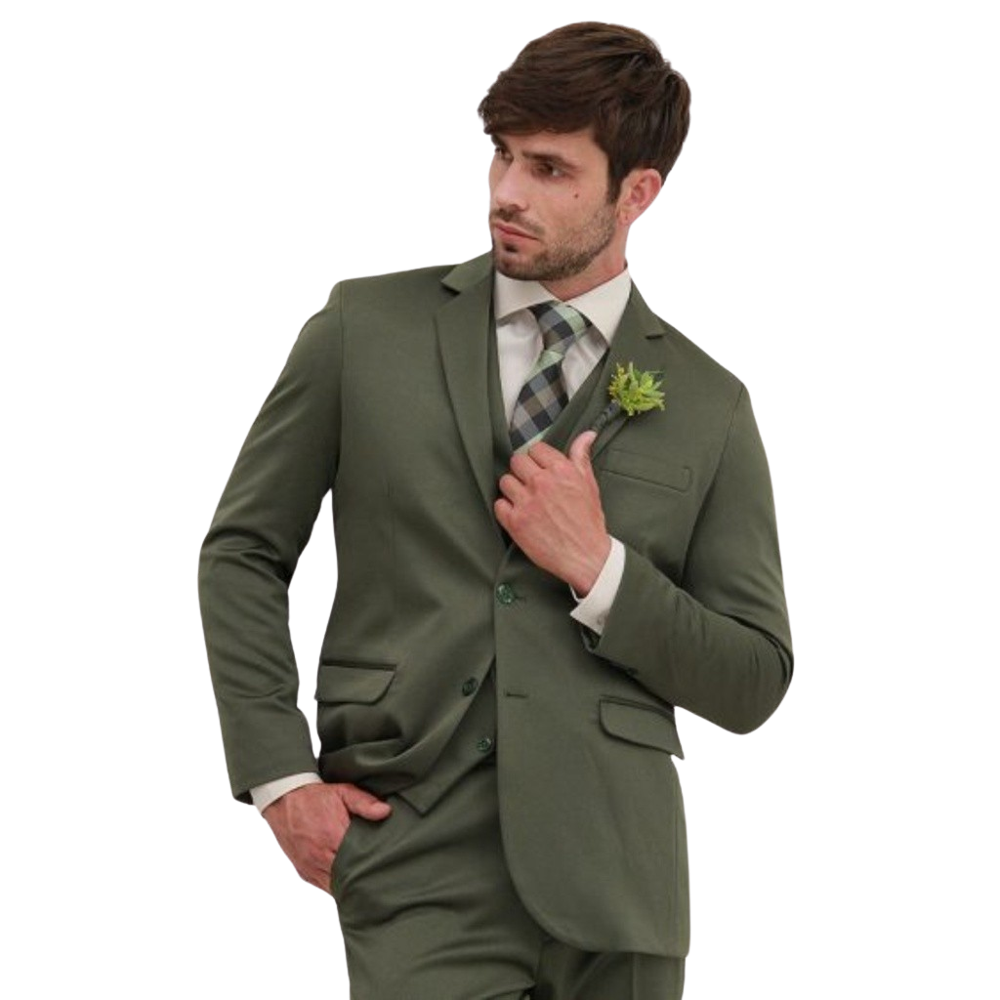

Fundação da LeGlamour
1814 - 1824
A Le Glamour surgiu em 1810, e foi um tremendo no sucesso na França pois revolucinou o mercado da moda produzindo peças diferentes das habituais, principalemten quando se tratava do quesito cor. No entanto, na mesma velocidade que ela abriu e ascendeu ao sucesso, suas portas foram fechadas, pois Napoleão Bonaparte não encontrava roupas que serviam nele, por possuir baixa estatura. Então, já que ele não podia ficar na moda, ninguém mais poderia. Apenas no fim da era Napoliônica, com a França assistindo a supremacia dos regimes absolutistas lhe impor o retorno da dinastia Bourbon, sob a tutela do rei Luís XVIII, a Le Glamour pode abrir suas portas novamente.
Momento da história onde a Le Glamour esteve presente
1880
Em 1880 aconteceu uma série de invenções importantes para a história e o futuro. Thomas Edison inventou a Lâmpada incandescente e disputava com Nicolas Tesla não só nas criações, mas competiam para saber quem possuira mais itens de nossas coleções. Galissard de Marignac descobre o elemento químico Gadolínio. Werner von Siemens constrói o primeiro elevador elétrico. O movimento republicano ganhou força: foram fundados centenas de clubes e dezenas de jornais republicanos por todo o país. E o que todos esses marcos tem em comum? Bom, todos os inventores estvam utilizando ternos Le Glamour.
Expansão na Inglaterra
1919
Em 1919, a Le Glamour continuou expandindo território através do globo. Viramos a principal fornecedora de vestimenta de um grupo inglês com o nome de Peaky Blinders. Esse foi o único momento da nossa história em que produzimos boinas e chapéus. No entanto, recentemente, com uma produção feita pela Netflix para contar sobre a vida desse grupo, decidimos fabricar novamente alguns modelos limitados para celebrar a antiga parceria e agradar os ingles que atualmente estão no topo da lista de compradores.

Expansão para Ásia
1980
Em 1980 após longos anos e inúmeras negociações, conseguimos expandir nosso comércio para a Ásia. Estreamos com um desfile nos arredores do monte fuji, e as modelos utilizaram uma linha de peças limitas conhecida como Coleção de Jade. Atualmente é possível encontrar alguns dos vestidos sendo leiloados por preços exorbitantes. Mas no geral, são peça raras que dificilmente são utilizadas por aqueles que as possuem.
Nossos polos
2023
Atualmente a Le Glamour se encontra em 121 países e se mantém líder de vendas no ramo de vestimentas. Ela é dirigida por 6 sócios, e tem como foco a inovação.